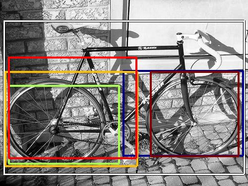
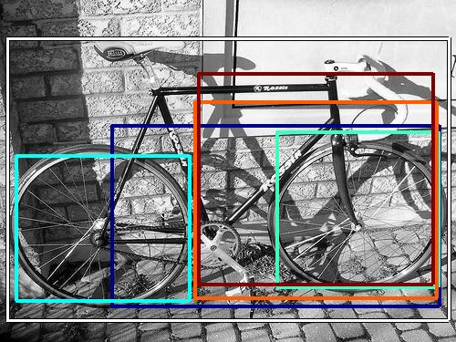

0.454808

0.479911

0.484024

0.565205

0.568123

0.586238

0.586834

0.613507

0.613671

0.623777
| Target image | 0.454808 | 0.479911 | 0.484024 | 0.565205 | 0.568123 | 0.586238 | 0.586834 | 0.613507 | 0.613671 | 0.623777 |
| Target image  |  12830.014648 |  11201.043945 |  10981.913086 |  7844.256836 |  7662.206055 |  6661.699219 |  6134.053223 |  5770.048340 |  5012.817871 |  4995.287598 |
Target image |  10610.864258 |  9762.150391 |  7183.072266 |  5928.480957 |  5912.467285 |  5546.098633 |  5407.860840 |  4973.516602 |  4955.553711 |  4654.026367 |
| Target image  |  19464.021484 |  14777.887695 |  14594.807617 |  9482.648438 |  8901.050781 |  8380.815430 |  8342.010742 |  8184.236328 |  8158.470703 |  8041.078125 |
Target image |  18864.560547 |  16613.248047 |  16134.266602 |  13348.474609 |  11421.770508 |  10804.306641 |  9226.036133 |  9089.786133 |  8159.208496 |  7745.856445 |